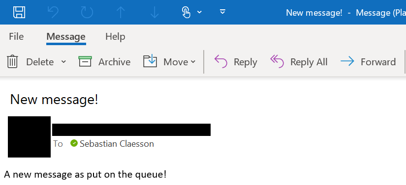
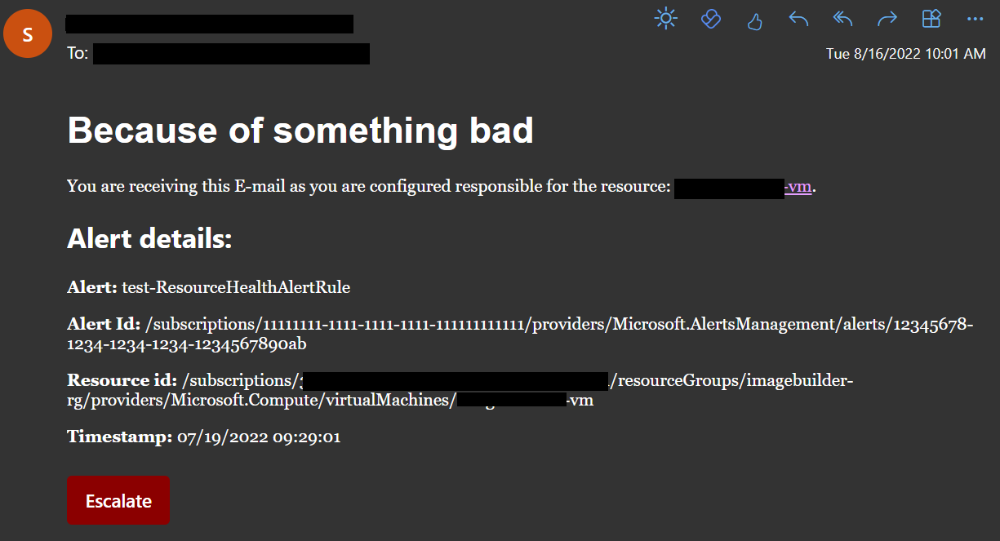

I've been playing around a little with Azure Functions and Azure Alerting. The design was to be able to utilize the Azure Alert rule processing function in Azure and have it create a prettier mail than what comes out of box.
Basically the design boiled down to having a few Azure Functions running a bit of PowerShell and a storage account with some tables and queues.
First of all we'll need a Function app with a managed identity. For this project I've decided to use a System Assigned identity for my Function app.
I'll deploy a bicep with the following settings to my Function app:
var location = resourceGroup().location
resource storageAccount 'Microsoft.Storage/storageAccounts@2021-09-01' = {
name: 'stalertdemo'
kind: 'StorageV2'
location: location
sku: {
name: 'Standard_LRS'
}
properties: {
allowBlobPublicAccess: false
allowSharedKeyAccess: true
accessTier: 'Hot'
supportsHttpsTrafficOnly: true
}
}
resource queueService 'Microsoft.Storage/storageAccounts/queueServices@2021-09-01' = {
name: 'default'
parent: storageAccount
}
resource sendgrid 'Microsoft.Storage/storageAccounts/queueServices/queues@2021-09-01' = {
name: 'sendgrid'
parent: queueService
}
resource tableService 'Microsoft.Storage/storageAccounts/tableServices@2021-09-01' = {
name: 'default'
parent: storageAccount
}
resource keyvault 'Microsoft.KeyVault/vaults@2021-10-01' = {
name: 'alertdemo-kv'
location: location
properties: {
enabledForDeployment: false
enabledForDiskEncryption: false
enabledForTemplateDeployment: false
enableRbacAuthorization: true
enableSoftDelete: false
tenantId: subscription().tenantId
sku: {
name: 'standard'
family: 'A'
}
}
}
resource appServicePlan 'Microsoft.Web/serverfarms@2020-12-01' = {
name: 'alertdemo-plan'
location: location
sku: {
tier: 'Dynamic'
name: 'Y1'
}
}
resource functionApp 'Microsoft.Web/sites@2022-03-01' = {
name: 'alertdemo-app'
location: location
kind: 'functionapp'
identity: {
type: 'SystemAssigned'
}
properties: {
serverFarmId: appServicePlan.id
httpsOnly: true
clientAffinityEnabled: false
siteConfig: {
cors: {
allowedOrigins: [
'https://azure.portal.com'
]
}
powerShellVersion: '7.2'
netFrameworkVersion: 'v6.0'
ftpsState: 'Disabled'
}
}
}
resource functionAppSettings 'Microsoft.Web/sites/config@2020-06-01' = {
parent: functionApp
name: 'appsettings'
properties: {
AzureWebJobsDisableHomepage: 'true'
AzureWebJobsSecretStorageKeyVaultUri: keyvault.properties.vaultUri
AzureWebJobsSecretStorageType: 'keyvault'
AzureWebJobsStorage__accountName: storageAccount.name
FUNCTIONS_APP_EDIT_MODE: 'readonly'
StorageQueueConnection__credential: 'managedidentity'
StorageQueueConnection__queueServiceUri: storageAccount.properties.primaryEndpoints.queue
WEBSITE_RUN_FROM_PACKAGE: '1'
FUNCTIONS_WORKER_RUNTIME: 'powershell'
FUNCTIONS_EXTENSION_VERSION: '~4'
}
}The bicep file will now create/configure:
- Create a Azure Storage Account with queue and table services enabled.
- Create a queue called sendgrid
- Store secrets in keyvault (such as the master/function keys) using the managed identity.
- Create a StorageQueueConnection object that will use my Storage Accounts queue endpoint and connect to that using the managed identity.
The bicep file is not complete and is missing resources such as role assignments etc. This just a demonstration of how to set the application settings.
Once the infrastructure is in place, you can now create the structure for your function app. If you're familiar with zip deployments/function bindings, this will be easy. However, if you are not familiar with it, I suggest reading about it at Zip-deploy & Function Triggers and Bindings.
Brief explanation of the triggers/bindings.
You can specify both in- and output bindings. There's bindings that you can use from the open source community or included in the function runtime. Read more about the runtime extension bundle.
In my scenario, I'll create a input binding that uses the Azure Storage Queue trigger. For my function it will have a function.json in it's folder, containing the following configuration:
{
"bindings": [
{
"name": "QueueItem",
"type": "queueTrigger",
"direction": "in",
"queueName": "sendgrid",
"connection": "StorageQueueConnection"
}
]
}As you can see there's a queueTrigger binding called "QueueItem". It also has a queueName which is the name of the queue, and a connection.
The binding will use the StorageQueueConnection "object" specified in my function app settings to retrieve the connection, as we specified in the bicep template.
The "object" can contain several settings, which you can read more about here Common properties for identity based connections & Connecting to host storage with an identity (Preview).
As you can see, I have no App Setting called "StorageQueueConnection", however I do have the following app settings:
StorageQueueConnection__credential: 'managedidentity'
StorageQueueConnection__queueServiceUri: storageAccount.properties.primaryEndpoints.queueTogether these app settings form the connection object. When the runtime is running a sync cycle, it will try and parse my settings that is prefixed with "StorageQueueConnection" and followed by two underscores. In my case, it will try to connect to my Azure Storage Account Queue endpoint using the Function app managed identity.
In order for this to work, you'll have to make sure that the managed identity has at least the Storage Queue Data Contributor role.
The configuration for the Azure Storage Account Queue settings can be set in the host.json file for the Function app. For our Function app, we'll use the following configuration:
{
"version": "2.0",
"extensionBundle": {
"id": "Microsoft.Azure.Functions.ExtensionBundle",
"version": "[3.11.0, 4.0.0)"
},
"extensions": {
"queues": {
"maxPollingInterval": "00:00:02",
"visibilityTimeout": "00:00:30",
"batchSize": 5,
"maxDequeueCount": 5,
"newBatchThreshold": 8,
"messageEncoding": "base64"
}
}
}This will configure our app to check the queue every 2 seconds. More about this can be found here queue extension settings.
After adding some PowerShell magic to our function app it will now parse the data passed down by the queue to the function.
using namespace System.Net
# Input bindings are passed in via param block.
param($QueueItem, $TriggerMetadata)
Write-Information "Queue item insertion time: $($TriggerMetadata.InsertionTime)"
Write-Information $QueueItemThe parameter must match the name set in the function.json file, in our case 'QueueItem'
This PowerShell script will only output the insertion time and the data of the message found in the queue.
We will make it more interesting in our case, and add a new output binding for SendGrid. To enable the output binding for SendGrid we will have to go back to our function.json file and add the following rows:
{
"bindings": [
{
"name": "QueueItem",
"type": "queueTrigger",
"direction": "in",
"queueName": "sendgrid",
"connection": "StorageQueueConnection"
},
{
"type": "sendGrid",
"direction": "out",
"name": "message",
"apikey": "<input api key>"
}
]
}Now as you can see, we have added a new output binding of the type sendGrid in the out direction. We'll give it the name message.
To understand how the sendGrid output binding works, we can read the help docs at SendGrid configuration.
To get your API key and getting started with SendGrid, you can read more here: SendGrid - Getting started.
I strongly suggest that you keep this secret inside of an Azure Keyvault and have a reference to it inside your function app setting.
But to keep it short, we'll add the following code to our PowerShell script.
$mail = @{
"personalizations" = @(
@{
"to" = [System.Collections.ArrayList]@(@{"email" = "user@contoso.com"})
}
)
"from" = @{
"email" = "user@contoso.com"
}
"subject" = "New message!"
"content" = @(
@{
"type" = "text"
"value" = "A new message was put on the queue!"
}
)
}
# Send the email using the output binding for SendGrid.
Push-OutputBinding -Name message -Value (ConvertTo-Json -InputObject $mail -Depth 100)Now the output binding will try to send an api call to SendGrid with our message. The simple message will look like this:

To make it more advanced you can also send a html file, in my case I'll use a html template file with some placeholders which we'll search and replace during runtime and using the information passed down by the message. Simply change the content-type to "text/html" when posting to the output binding, if you like pretty mails :)

Thank you for reading and hopefully my notes will be found useful!
//Sebastian